Introducción y Datos
Antes de comenzar una visualización es necesario saber qué queremos responder con ella. En este caso, utilizaremos la base de datos mpg incluída en ggplot2. El primer paso es, entonces, conocer la información que contiene. Para ello guardaremos la base en una variable que llamaremos df1:
# A tibble: 234 x 11
manufacturer model displ year cyl trans drv cty hwy fl class
<chr> <chr> <dbl> <int> <int> <chr> <chr> <int> <int> <chr> <chr>
1 audi a4 1.8 1999 4 auto(l… f 18 29 p comp…
2 audi a4 1.8 1999 4 manual… f 21 29 p comp…
3 audi a4 2 2008 4 manual… f 20 31 p comp…
4 audi a4 2 2008 4 auto(a… f 21 30 p comp…
5 audi a4 2.8 1999 6 auto(l… f 16 26 p comp…
6 audi a4 2.8 1999 6 manual… f 18 26 p comp…
7 audi a4 3.1 2008 6 auto(a… f 18 27 p comp…
8 audi a4 quat… 1.8 1999 4 manual… 4 18 26 p comp…
9 audi a4 quat… 1.8 1999 4 auto(l… 4 16 25 p comp…
10 audi a4 quat… 2 2008 4 manual… 4 20 28 p comp…
# … with 224 more rowsUna manera rápida de tener una idea de cómo está dispuesta una base de datos es utilizando la función head(var). Esta nos mostrará solo las primeras instancias (renglones) del data.frame que estemos analizando. En la tabla inferior podemos ver que se trata de una base de datos sobre automóviles y que las columnas representan: el fabricante, el modelo, el desplazamiento de combustible (litros), el año del modelo, el número de cilindros, el tipo de transmisión, el tipo de tracción, los consumos en ciudad y autopista (en millas por galón, mpg), el tipo de combustible que utilizan y la clase a la que pertenencen. También nos plantearemos el objetivo de eliminar la mayor cantidad de elementos posibles hasta solo tener el esqueleto y de ahí agregar algunos elementos que favorezcan la interpretación.
head(df1)
# A tibble: 6 x 11
manufacturer model displ year cyl trans drv cty hwy fl class
<chr> <chr> <dbl> <int> <int> <chr> <chr> <int> <int> <chr> <chr>
1 audi a4 1.8 1999 4 auto(l5) f 18 29 p compa…
2 audi a4 1.8 1999 4 manual(m5) f 21 29 p compa…
3 audi a4 2 2008 4 manual(m6) f 20 31 p compa…
4 audi a4 2 2008 4 auto(av) f 21 30 p compa…
5 audi a4 2.8 1999 6 auto(l5) f 16 26 p compa…
6 audi a4 2.8 1999 6 manual(m5) f 18 26 p compa…ggplot() + ...
A partir de esta información podemos tratar de responder si existe una relación apreciable entre el consumo de combustible (por ejemplo en autopista) y el desplazamiento del motor, considerando la clase del vehículo. Para atender a esta pregunta utilizaremos un gráfico de dispersión, con el desplazamiento en el eje x, el consumo en el eje y y la clase indicada por los colores de los puntos. Ahora que tenemos claro qué queremos visualizar y cómo lo vamos a visualizar podemos empezar a graficar. El primer paso es inicializar el espacio de graficado con la función ggplot() y pasarle los parámetros estéticos utilizando la función aes(x, y, colour). Es importante mencionar que en este momento aparecerá únicamente el espacio de graficado en blanco. Esto es normal, ya que únicamente definimos el “qué”, pero no el “cómo”.
Ya que inicializamos el espacio gráfico podemos agregar la información que nos interesa. Para facilitar la construcción paso a paso y evitar el repetir código innecesariamente podemos almacenar la gráfica completa en una variable (por ejemplo plot2) e ir añadiendo capas (operador +) posteriormente. Para ver un gráfico guardado en una variable simplemente hay que llamar a esa variable. La primera capa que agregaremos será la que indicará el tipo de gráfico que deseamos (nombrados como geom_*), en este caso un gráfico de dispersión:
plot1 <- ggplot(data = df1, aes(x = displ, y = hwy, colour = class)) +
geom_point()
plot1 # Imprime el gráfico
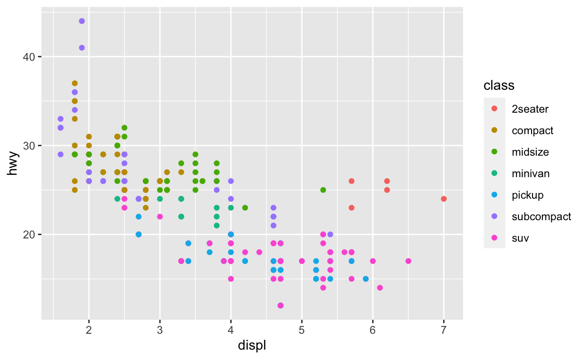
Ahora sí tenemos la información que necesitamos y podríamos comenzar a describir el gráfico, pero en realidad hay demasiados elementos que son innecesarios y otros que son poco informativos en su estado actual (etiquetas de ejes), entonces trabajemos uno por uno. Para modificar las etiquetas de los ejes podemos utilizar las funciones xlab() y ylab() como capas separadas; sin embargo, podemos modificar todas las etiquetas y títulos en un mismo paso utilizando la función labs(title, x, y, caption, colour, ...).
plot2 <- plot1 + labs(x = "Desplazamiento (l)",
y = 'Consumo (mpg)',
colour = 'Clase',
title =
'Tamaño del motor y Rendimiento de combustible',
subtitle = 'Consumo en carretera',
caption = 'Datos: ggplot2::mpg')
plot2
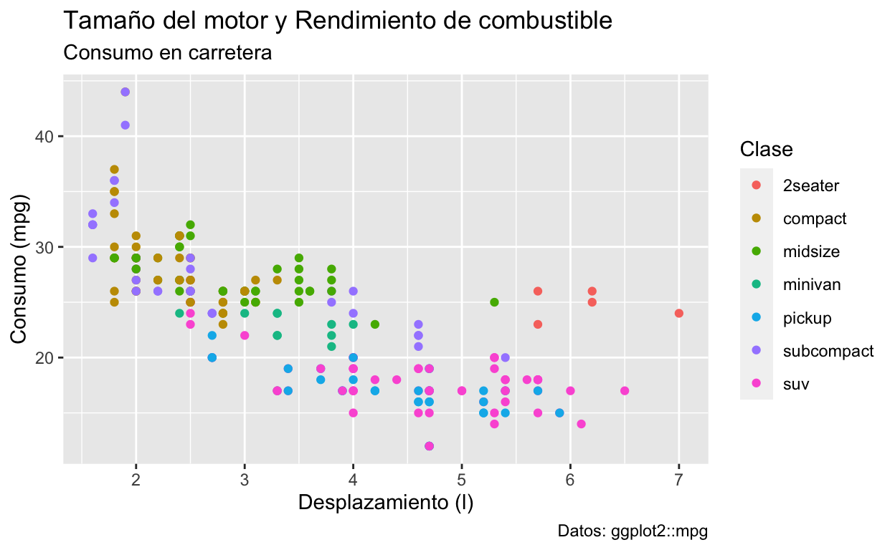
Tema de ggplot2
Ahora que está claro cuáles son las variables que estamos mostrando podemos empezar a modificar la estética. Recordemos que debemos mantener la relación datos/tinta lo más alta posible, y uno de los elementos más prevalentes del gráfico es el fondo gris con todo y cuadrículas. Para modificar esos elementos tenemos que modificar el “tema” de la gráfica, que no es otra cosa mas que utilizar una función que nos permita modificar en una sola línea la estética general del gráfico. Los temas se encuentran señalados con el nombre theme_*. Probemos con theme_minimal():
plot2 + theme_minimal()
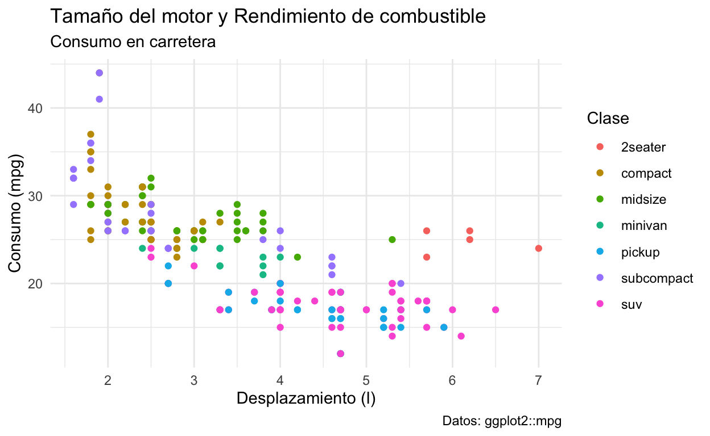
Logramos eliminar el fondo gris y de paso las “espinas” (líneas de los ejes) y ahora el gráfico está en mucho mejor condición para ser presentado; sin embargo aún podemos ir más lejos. El objetivo de esta gráfica no es ver los detalles precisos de la información, si no extraer la información más relevante, por lo que la cuadrícula es un elemento que no aporta nada a la visualización. Para retirarla utilizaremos la función theme(), la cual permite modificar el aspecto de todos los elementos del gráfico. En realidad, las funciones theme_*() son aplicaciones de theme() con diferentes valores por defecto, por lo que podemos replicar el efecto de theme_minimal() e incluir otras modificaciones. Otra función muy útil para este procedimiento es la función element_blank(), la cual le indica a ggplot2 que no debe mostrar ese elemento. Otra cuestión importante que debemos de considerar es la relación de aspecto. Debido a que esta puede modificar enormemente la percepción de los datos, su selección no es algo trivial. En general, la proporción áurea (1:1.61) es un buen punto de partida y en series de tiempo es la proporción que menos deforma los datos. Una proporción cuadrada tiene sentido únicamente en aquellos casos en los que ambos ejes tengan la misma magnitud de variación y procuraremos que el eje más largo sea aquel con la variación más pequeña. En este caso, la variación del eje y (5 a 45) es mucho mayor que la del eje x (1.5 a 7), por lo cual una proporción cuadrada no sería una buena alternativa. En su lugar, utilicemos la proporción áurea. El último elemento que eliminaremos aquí son las marcas de los ejes, ya que realmente no aportan demasiada información.
plot2 <- plot2 +
# Eliminamos la cuadrícula menor
theme(panel.grid.minor = element_blank(),
# Eliminamos la cuadrícula mayor
panel.grid.major = element_blank(),
# Eliminamos el color de fondo
panel.background = element_blank(),
# Eliminamos las líneas de los ejes
axis.line = element_blank(),
# Eliminamos la leyenda
legend.key = element_blank(),
# Cambiamos la relación de aspecto
aspect.ratio = 1/1.61,
# Eliminamos las marcas de los ejes
axis.ticks = element_blank()
)
plot2

Personalizar los ejes
Ahora que nos deshicimos del fondo, la cuadrícula y las líneas y marcas de los ejes podemos trabajar en los valores de los ejes. Una de las mejores maneras de hacerlo es utilizando las funciones scale_x_*() o scale_y_*(), sustituyendo el * por continuous o discrete dependiendo del tipo de variable con el que estemos trabajando. En este caso, eliminaremos por completo las marcas del eje y y dejaremos únicamente los desplazamientos más comunes en el eje x.
plot2 <- plot2 + scale_x_continuous(breaks = c(1.8, 2.5, 5, 7)) +
scale_y_continuous(breaks = NULL)
plot2
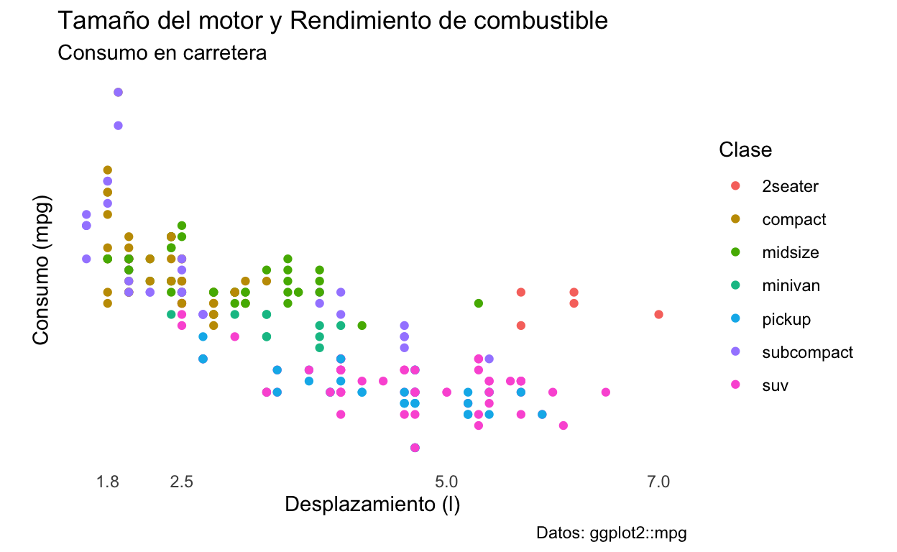
Añadir líneas de referencia
Ahora que nos deshicimos de los valores del eje la gráfica ya no es entendible debido a que no sabemos cuál es la orientación o la escala de los datos. Una alternativa es añadir un par de líneas de referencia. Esto lo haremos con la función geom_hline(), la cual nos permite añadir líneas horizontales a través de todo el gráfico que cruzan al eje y en una posición que nosotros determinamos:
# Valores de referencia como el mínimo, la media y
# el máximo de los consumos
refs <- c(round(min(df1$hwy),0),
round(mean(df1$hwy),0),
round(max(df1$hwy),0))
# Líneas de referencia, una verde para el mejor consumo,
# una gris para el consumo promedio y una roja para el peor consumo
plot2 <- plot2 + geom_hline(yintercept = refs[1],
colour = 'firebrick', alpha = 0.5,
linetype = 'dashed') +
geom_hline(yintercept = refs[2],
colour = 'lightslategrey', alpha = 0.5,
linetype = 'dashed') +
geom_hline(yintercept = refs[3],
colour = 'forestgreen', alpha = 0.5,
linetype = 'dashed')
plot2
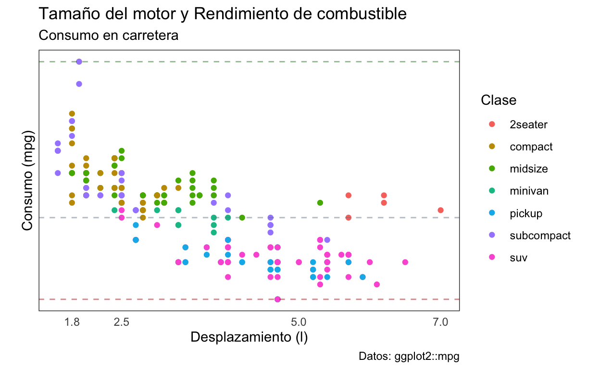
Ahora el gráifico ya cuenta nuevamente con un sentido de dimensión, pero no tenemos los valores de referencia, entonces habrá que poner esas anotaciones con la función geom_text(), utilizando como valores de posición en y los mismos que las líneas de referencia + un pequeño valor:
# Líneas de referencia con los mismos colores
plot2 <- plot2 + annotate('text', x = 1.3, y = refs[1]+1,
label = as.character(refs[1]),
colour = 'firebrick') +
annotate('text', x = 1.3, y = refs[2]+1,
label = as.character(refs[2]),
colour = 'lightslategrey') +
annotate('text', x = 1.3, y = refs[3]+1,
label = as.character(refs[3]),
colour = 'forestgreen')
plot2
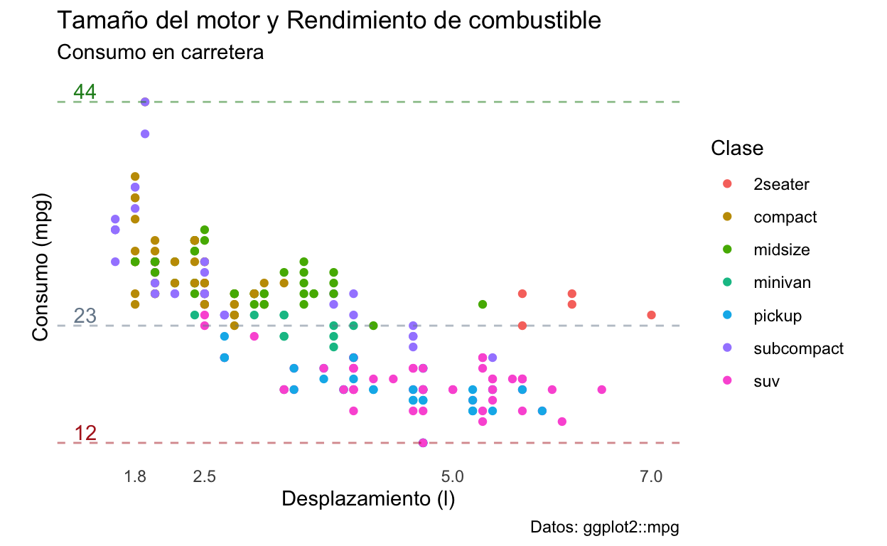
Con esta última modificación terminamos de explorar algunas de las funciones más básicas e importantes para personalizar los elementos que más impactan en una visualización, pero antes de terminar de discutir este punto me gustaría terminar el objetivo que nos propusimos al inicio de sacar información de la gráfica. En general, existe una tendencia a que el consumo de combustible incremente conforme incrementa el desplazamiento, lo cual es de esperarse, ya que el desplazamiento es una medida de el volumen máximo de combustible que puede entrar al motor en un momento dado; sin embargo, podemos también observar que, independientemente del desplazamiento, las SUVs y pickups tienden a tener los peores rendimientos de combustible, mientras que los subcompactos tienden al otro extremo. Podemos también analizar a los vehículos de dos plazas y ver que aún cuando tienen desplazamientos altos, sus rendimientos son mejores que los de las SUVs.
Conclusión y ejercicio
En cuanto a la parte visual, se podría argumentar que esta visualización final no es tan precisa como la primera, que algún elemento podría embellecerse, o que podriamos eliminar la leyenda y poner etiquetas de texto en algunos puntos para indicar las clases. Todos estos argumentos y muchos otros serían válidos ya que la estética es algo subjetivo; sin embargo, las decisiones que tomemos deberán estar en función del medio de distribución de la visualización (no es lo mismo una página web que en un medio impreso, por ejemplo) y sobre todo del público objetivo. Esta visualización en particular funciona para los fines didácticos que tenía en mente, es adecuada para una presentación de resultados de manera electrónica como este video, pero no es una visualización adecuada para una publicación científica. Tomando eso en cuenta, te sugiero hacer el ejercicio de transformarla para cumplir con ese objetivo, ¿qué elementos quitarías? ¿qué elementos cambiarías? ¿qué elementos agregarías? ¿crees que en su estado actual cumple con los criterios de Tufte y Cairo que revisamos la clase anterior?
Para finalizar la clase te presento la visualización inicial y la final, una junto a la otra, para ver en dónde comenzamos, dónde terminamos y cómo llegamos hasta aquí. También te sugiero revises y descargues el PDF de esta página, que es un acordeón donde se encuentran los gráficos y funciones más comunes. Más adelante revisaremos algunos de ellos pero es un recurso que vale la pena tener a la mano.
Esto es todo para esta clase. ¡Nos vemos en la siguiente!
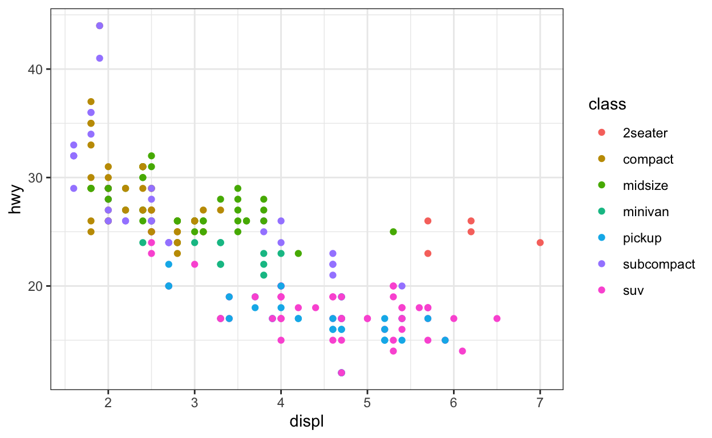
Gráfico final
# Valores de referencia para utilizar en la gráfica
refs <- c(round(min(df1$hwy),0), # Valor mínimo = peor consumo
round(mean(df1$hwy),0), # Valor promedio
round(max(df1$hwy),0)) # Valor máximo = mejor consumo
# Objeto con todos los pasos para llegar a la gráfica final
# Inicializamos el espacio gráfico
final.plot <- ggplot(data = df1, aes(x = displ, y = hwy,
colour = class)) +
# Gráfico de dispersión
geom_point() +
# Establecemos los títulos, subtítulos y un pie de foto
labs(x = 'Desplazamiento (l)',
y = 'Consumo (mpg)',
colour = 'Clase',
title = 'Tamaño del motor y Rendimiento de combustible',
subtitle = 'Consumo en carretera',
caption = 'Datos: ggplot2::mpg'
) +
#Eliminamos la cuadrícula menor
theme(panel.grid.minor = element_blank(),
#Eliminamos la cuadrícula mayor
panel.grid.major = element_blank(),
#Eliminamos el color de fondo
panel.background = element_blank(),
#Eliminamos las líneas de ejes
axis.line = element_blank(),
#Eliminamos el fondo de la leyenda
legend.key = element_blank(),
#Establecemos la rel. de aspecto
aspect.ratio = 1/1.61,
#Eliminamos las marcas de los ejes
axis.ticks = element_blank(),
#Cambiamos el tipo de letra
text = element_text(family = 'Times',
colour = 'gray50')
) +
# Reducimos las divisiones del eje ex a 4 valores
scale_x_continuous(breaks = c(1.8, 2.5, 5, 7)) +
# Eliminamos las divisiones del eje y
scale_y_continuous(breaks = NULL) +
# Añadimos una línea roja en el peor consumo
geom_hline(yintercept = refs[1],
colour = 'firebrick', alpha = 0.5,
linetype = 'dashed') +
# Añadimos una línea gris en el consumo promedio
geom_hline(yintercept = refs[2],
colour = 'lightslategrey', alpha = 0.5,
linetype = 'dashed') +
# Añadimos una línea verde en el mejor consumo
geom_hline(yintercept = refs[3],
colour = 'forestgreen', alpha = 0.5,
linetype = 'dashed') +
# Etiqueta del peor consumo
annotate('text', x = 1.3, y = refs[1]+1,
label = as.character(refs[1]),
colour = 'firebrick') +
#Etiqueta del consumo promedio
annotate('text', x = 1.3, y = refs[2]+1,
label = as.character(refs[2]),
colour = 'lightslategrey') +
# Etiqueta del mejor consumo
annotate('text', x = 1.3, y = refs[3]+1,
label = as.character(refs[3]),
colour = 'forestgreen')
final.plot

Extras
Colores de puntos
Modificar los colores de los puntos. Podemos utilizar la función randomColor(n) de la librería con el mismo nombre. Esta función solamente recibe el número de colores que queremos y los generará de manera aleatoria:
aleat <- randomcoloR::randomColor(7)
final.plot + scale_color_manual(name = "Clase", values = aleat)
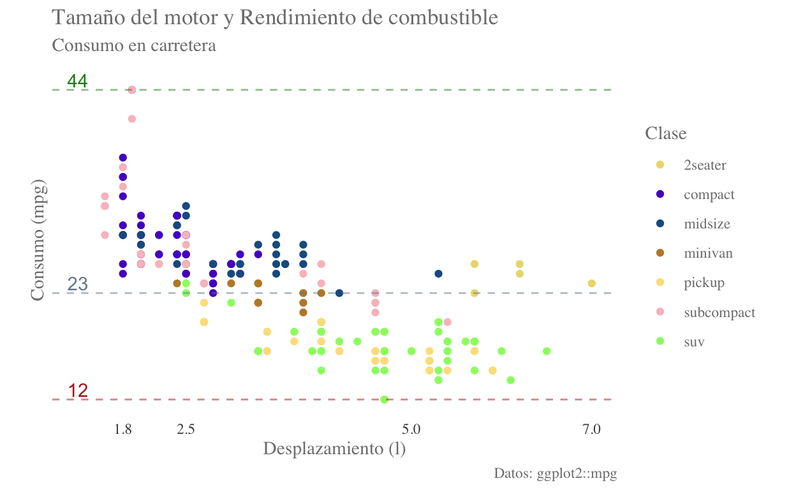
Podemos también especificar una paleta predefinida, utilizando la capa scale_color_brewer():
final.plot + scale_color_brewer(type = "seq", palette = "Paired")
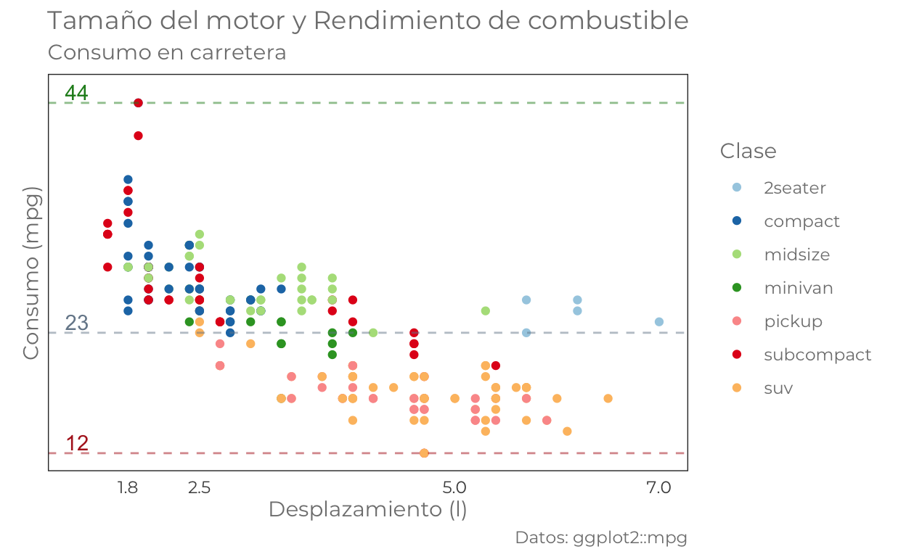
Otra opción es directamente pasar un vector con los nombres de los colores que sean de nuestro interés:
color_names <- c("red", "blue", "yellow", "black",
"dodgerblue", "pink", "gray")
final.plot + scale_color_manual(name = "Clase", values = color_names)
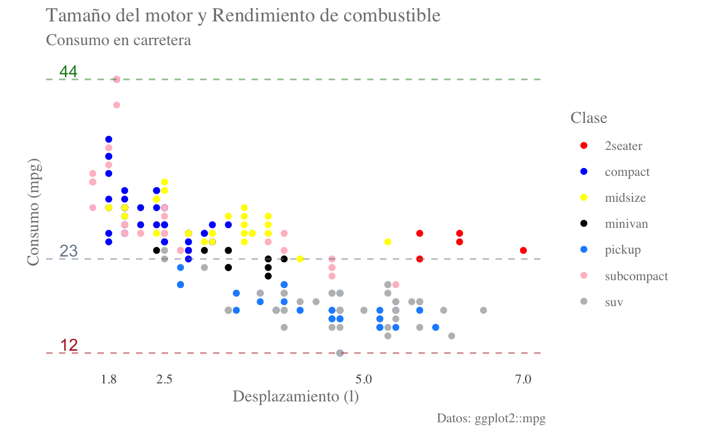
Tamaño de los puntos
Para modificar el tamaño de los puntos solamente hay que agregar el argumento size a la capa geom_point, en el cuál indicaremos qué tamaños tomarán los puntos. Puede ser un solo valor:
final.plot + geom_point(size = 0.1)
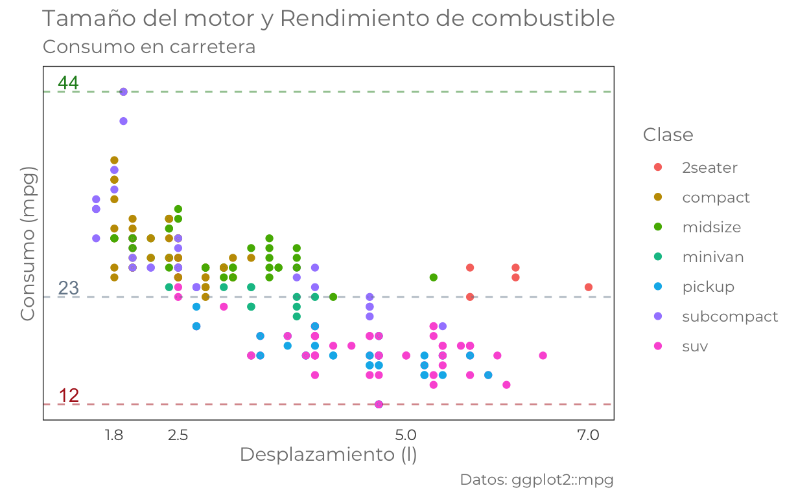
O también a partir de una columna de la base de datos (dividida entre 5 para no obtener únicamente “manchas”):
final.plot + geom_point(size = df1$hwy/5)
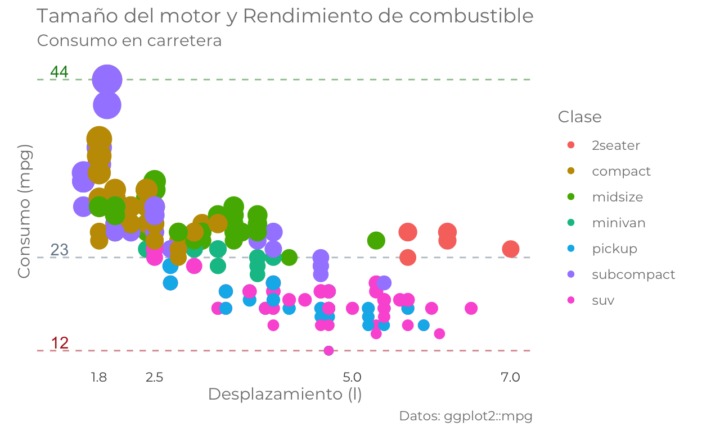
Tipografías y Exportación de gráficos
El manejo de las tipografías en R es un poco especial, por ello usualmente recomiendo generar el gráfico en R, exportarlo como PDF (cairo_pdf("filename.pdf", width, height, family)) y agregar las cursivas donde sea necesario; sin embargo, un paquete que puede resultar especialmente útil es ggtext. Este añade un nuevo “elemento” de texto que recibe formato Markdown (element_markdown()); es decir, podemos agregar itálicas o negritas. Para poder utilizarlo, sin embargo, es necesario modificar ligeramente nuestros datos de antemano. Para facilitarnos las cosas agregaremos una nueva columna a df1 que contenga las clases en itálicas y extraeremos los valores únicos (algo más eficiente sería hacerlo al revés, pero es más lógico de esta manera):
Finalmente lo agregaremos a la gráfica. ¡OJO! Es necesario modificar el tema para que entienda el formato markdown:
if(!require(ggtext)) {install.packages("ggtext", dependencies = T)}
final.plot + scale_color_discrete(name = "Clase",labels = clases) +
theme(legend.text = ggtext::element_markdown())
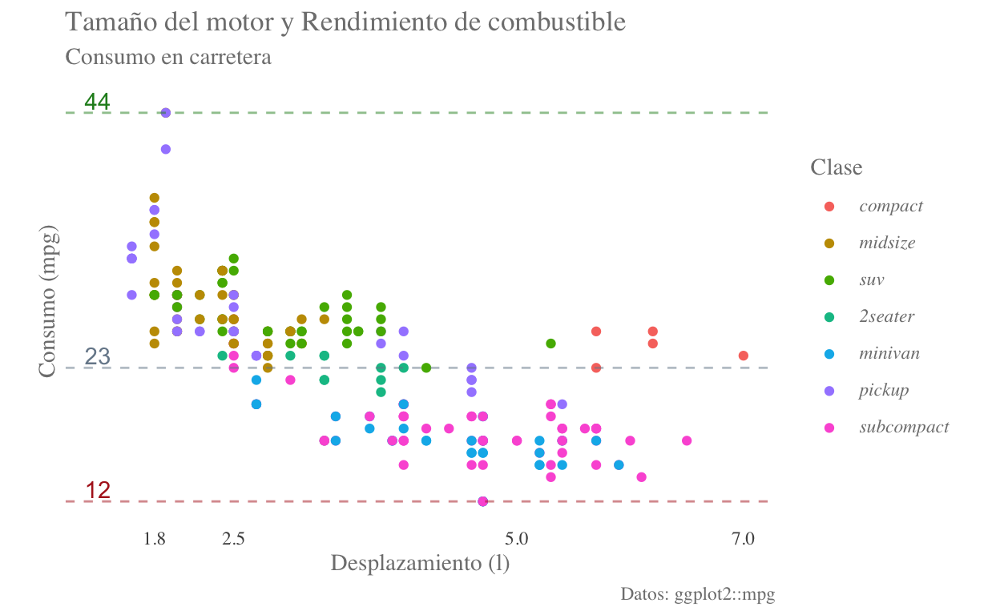
Con este elemento podemos modificar también fracciones de cualquier texto de nuestra gráfica, por ejemplo carretera en negritas:
final.plot + labs(subtitle = "Consumo en **carretera**") +
theme(plot.subtitle = ggtext::element_markdown())

Mezclando ambas modificaciones:
final.plot + scale_color_discrete(name = "Clase",labels = clases) +
labs(subtitle = "Consumo en **carretera**") +
theme(plot.subtitle = ggtext::element_markdown(),
legend.text = ggtext::element_markdown())
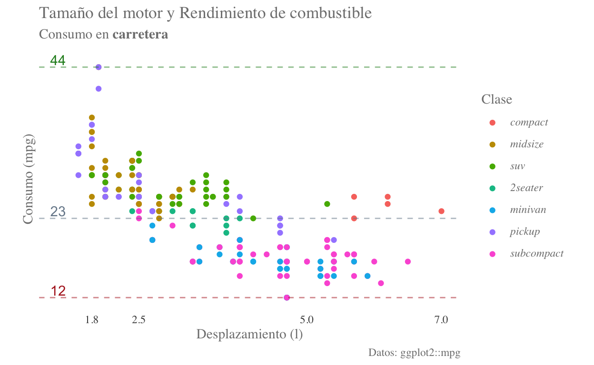